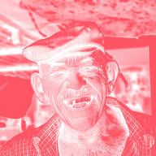

Đóng dấu độ sáng

Biến lớp thành một màu phẳng có độ mờ theo độ sáng của từng pixel, như con dấu hay khuôn tô.
Cài đặt
| Cài đặt | Loại | Phạm vi | Mặc định |
|---|---|---|---|
| Màu | Màu | – | #FF5566 |
| Điểm đen | Số | 0 đến 1 | 0.1 |
| Điểm trắng | Số | 0 đến 1 | 0.6 |
| Gamma | Số | 0.1 đến 10 | 1 |
| Đảo ngược | Bật hoặc tắt | – | Tắt |